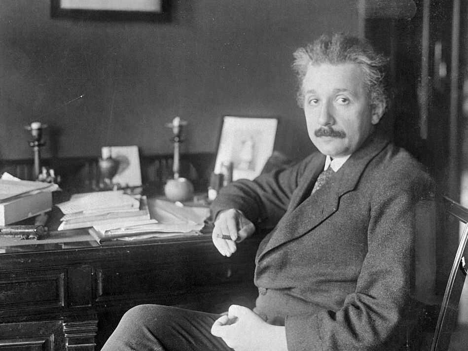

Cariera
Elvetia
1901: Șomer fiind, caută de lucru. Găsește de lucru ca tutore, meditator și apoi ca profesor la o școală privată în Schaffhausen.
1902: Einstein primește o slujbă la Institutul de Patente din Elveția ca examinator de brevete (expert tehnic, clasa a III-a).
1905: Einstein primește titlul Doctor în Fizică în cadrul Universității din Zürich, în urma unei dizertații privind determinarea dimensiunilor moleculare.
1906: Einstein avansează profesional ajungând examinator (expert tehnic, clasa a II-a) la Biroul de Patente.
1908: Obține un post de lector la Universitatea din Berna.
1909: Părăsește postul de la Oficiul de Patente deoarece este numit profesor asociat de fizică teoretică la Universitatea din Zürich.
1911: Einstein se mută cu familia la Praga și este numit profesor titular la Universitatea Germană de acolo (unde rămâne până în 1912).
1912: - 1914: Einstein se mută la Zürich și obține postul de profesor de fizică teoretică la Universitatea ETH și aceasta la recomandarea Mariei Curie, care a remarcat valoarea lucrărilor sale științifice. Aici găsește un mediu favorabil studiilor și cercetărilor sale: i se permite să efectueze orice experiment dorește.
Berlin
1914: Devine director la Institutul Kaiser Wilhelm din Berlin (secția de cercetare în cadrul Academiei Prusiene), dar și profesor de fizică teoretică la Universitatea din Berlin, toate acestea la recomandarea fizicianului german Max Planck.
1917: Este numit director la Institutul Kaiser Wilhelm din Berlin
1920: Einstein este numit profesor-invitat la Universitatea din Leiden.
1921: 5 mai: este ales membru străin al Royal Society
Princeton
În 1933 ascesiunea naziștilor și a ideologiei antisemite îl determină pe Einstein să emigreze în SUA și astfel că, împreună cu o parte din studenții săi, se stabilește la Princeton, unde va rămâne pentru tot restul vieții.
1932: Numit profesor la The Institute for Advanced Study, Princeton.
1943: Primește funcția de consultant la Divizia de Cercetare și Dezvoltare, secția Muniții și Explozibili în cadrul Armatei americane